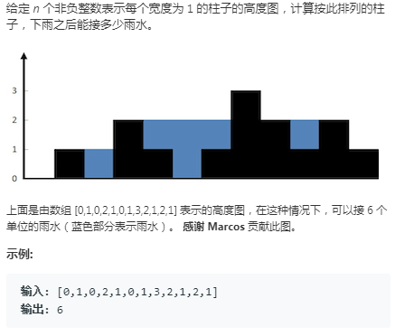

算法解题地址：https://leetcode-cn.com/problems/trapping-rain-water/solution/xiang-xi-tong-su-de-si-lu-fen-xi-duo-jie-fa-by-w-8/
这个是真的牛比，当看到这个解决方法时，我惊了，我的初始想法是通过柱子的变化趋势去找到所有的凹槽，然后用Math.min(left,right)*(rx-lx-1)-(中间的圆柱的体积)得到每个凹槽装水的体积，然后进行累加得到盛水的总体积，这种思路真的是太直了，直得一点弯都不转的，而且这种解法不适用于最后一个凹槽的情况。可能是看到题目的缘故把，让我直接想算所有凹槽盛水的体积。这个大神将这个题目完全转化成了几何问题，将整个分解成了每一行来算，将这个看起来极其复杂的问题转化成了一个很简单的问题，太厉害了。有的时候题目可能是最能迷惑人的地方，将我们的思路强行移动到一个方向，但这个方向可能很麻烦，如果说这个题目的问题是
求蓝色区域的面积，我们可能很想的简单一些。所以说，不要总是停留在自己的世界里面了，多去看看其他人的想法可能会给你的编程带来帮助，你的脑袋也会更加活跃一些吧。
以下是个人写的代码，如果有大佬帮忙给看一下，谢谢：

package test;
/*
* 本程序的基本思想
* 通过柱子的变化趋势分别确定凹槽的左边界和右边界
*只遍历一遍柱子高度
*该程序的过程
*判断左边界，左边界确定判断右边界，最后将按照Math.min(left,right)*(rx-lx)-(中间的圆柱的体积)计算处
*凹槽中盛水的体积
*/
public class RainWater {
public static void main(String[] args) {
//柱子的高度
int [] height=new int[]{0,1,0,2,1,0,1,3,2,1,2,1};
//左指针，用来记录凹槽的左边
int left=0;
//右指针，用来记录凹槽的右边
int right=0;
//游标 作为程序结束的条件
int cursor=1;
//柱子的个数，用来判断游标是否遍历到数组最后
int size=height.length;
//凹槽装水的总体积
int sum=0;
while(cursor<size) {
//1、判断左边界
if(height[left]<=height[cursor]) {
//a、没有变化趋势或者是上升趋势，那么这个柱子不能作为左边界，所以，将左边界向右移动
left++;
//b、游标向右移动
cursor++;
//c、进行下一次循环
continue;
}
else {
cursor++;
//a、说明有成为左边界的趋势，如果中间小于左边，直到找到一个>=左边界的边作为右边界，每一次while循环找到一
//b、凹槽，并计算面积
while(cursor<size&&height[left]>height[cursor]) {
cursor++;
}
//c、当while循环调处时，判断是否因为遍历到最后找不到导致循环跳出
if(cursor==size) {
break;
}
else {
//d、找到了右边界，采用公式计算出当前凹槽的体积
right=cursor;
sum+=height[left]*(right-left-1)-getSum(0,left,right,height);
System.out.println("凹槽边界["+left+","+right+"],体积为"+(height[left]*(right-left-1)-getSum(0,left,right,height)));
//d、将左右边界重置，游标+1
left=right=cursor;
cursor++;
//e、寻找下一个凹槽，并计算凹槽体积
continue;
}
}
}
System.out.println("装水的总体积为"+sum);
}
public static int getSum(int sum,int left,int right,int [] height) {
// int sum=0;
for(int i=left+1;i<right;i++) {
sum+=height[i];
}
return sum;
}
}